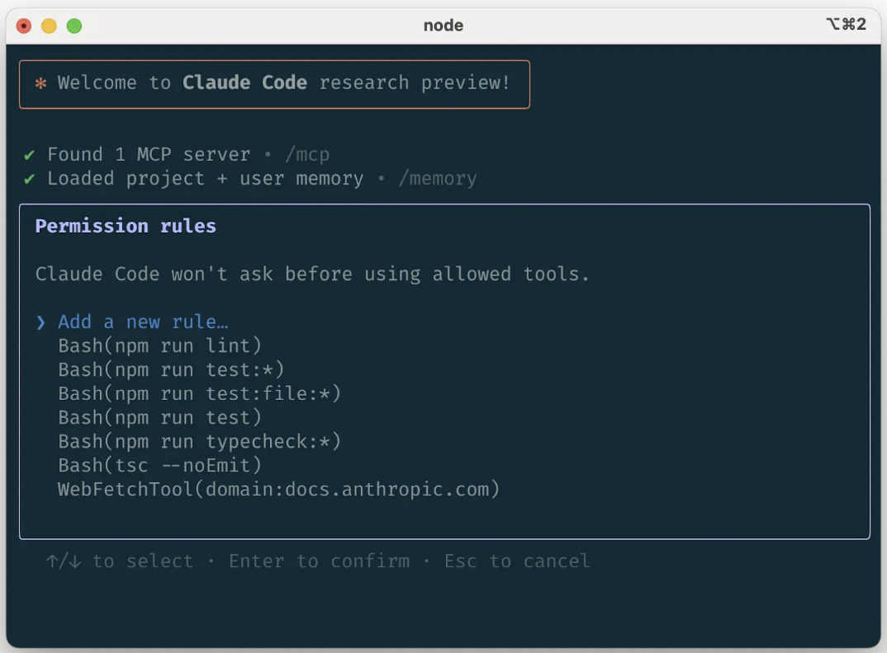
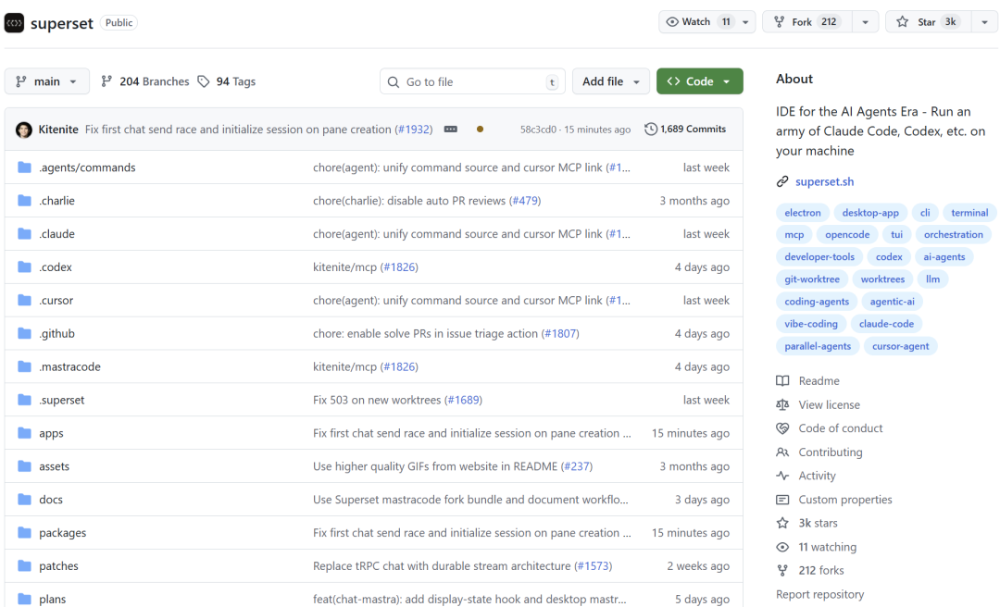
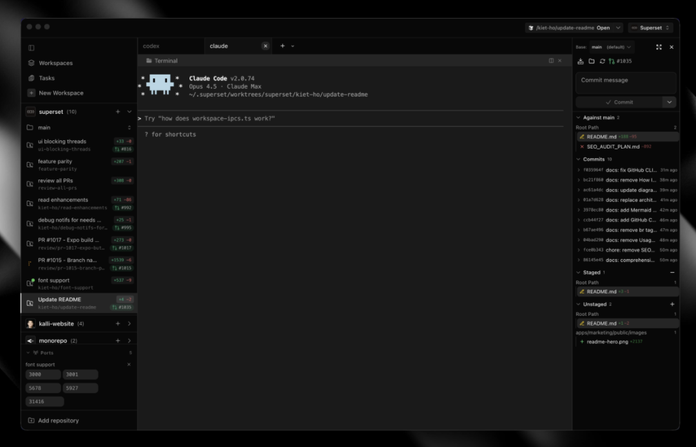
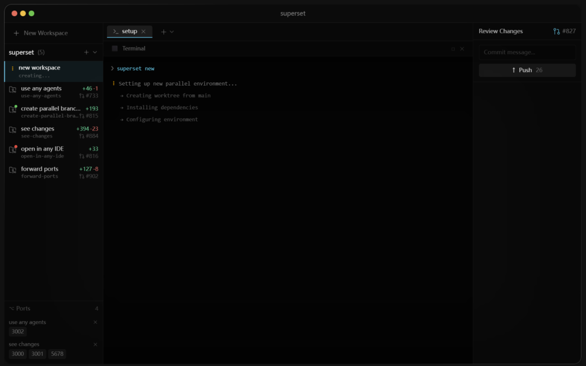
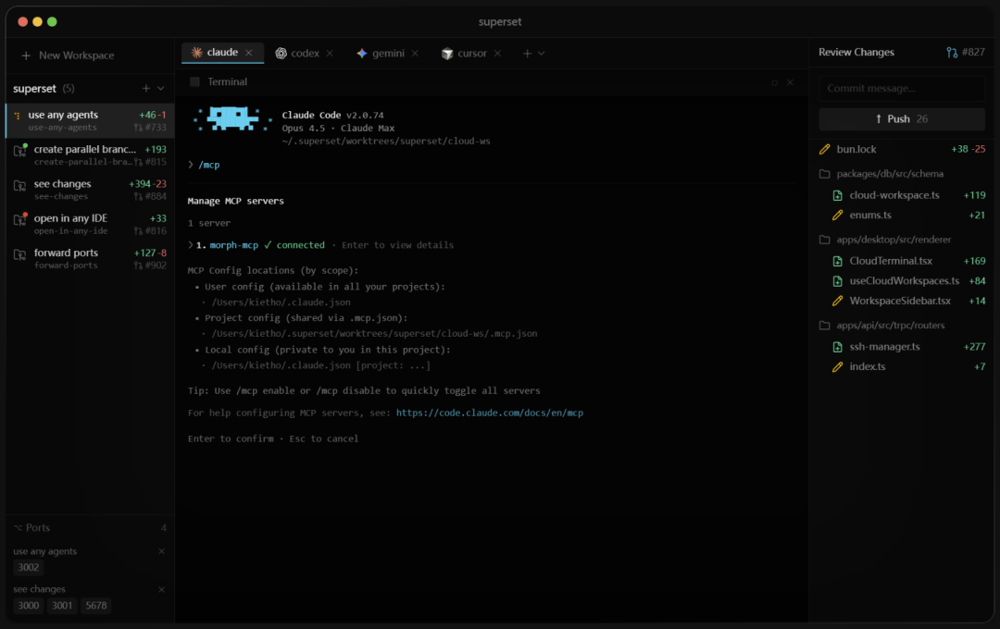
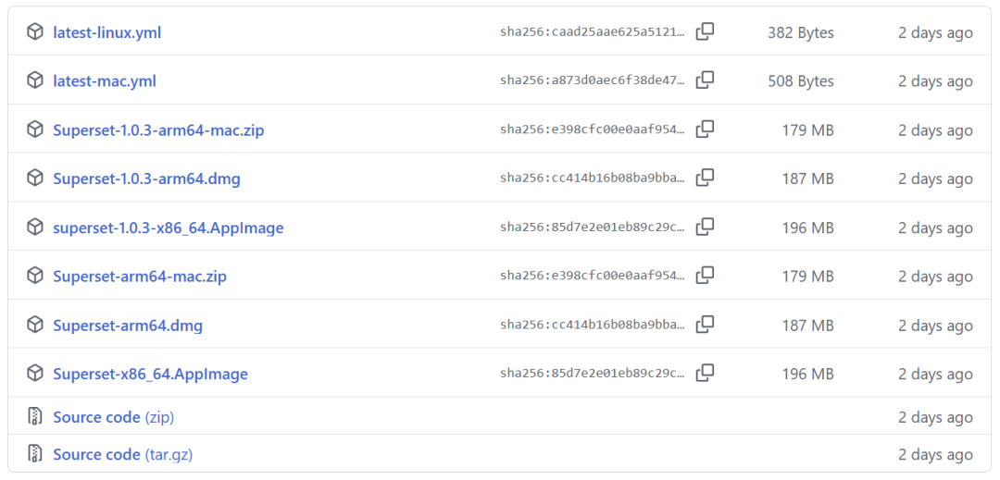

一个终端，同时跑 10 个 AI Agent，还不卡。
最近在用 Claude Code 写代码的时候，遇到一个很现实的问题。
项目里有好几个功能要同时开发，但 Claude Code 一次只能处理一个任务。想让它同时干几件事？要么开多个窗口，要么就老老实实排队等。

开多个窗口，电脑内存直接爆炸。排队等的话，效率又上不去。
直到看到 Superset 这个开源项目，才发现原来还能这么玩。
这个项目从去年 10 月开源至今，已经拿到 3000+ Star，看来不少人都有类似的需求。

它的核心能力是让你在一台机器上，同时跑多个 CLI 类型的 AI Agent。
Claude Code、Codex、Cursor Agent、Gemini CLI，只要是命令行能跑的，它都能管。
关键是每个 Agent 都有自己独立的工作区和 Git 分支，互不干扰。
一个 Agent 在重构代码，另一个在写测试，第三个在修 Bug，各干各的活，最后统一合并。
工作区隔离机制

Superset 用的是 Git Worktree 技术。
简单说就是给每个任务分配一个独立的工作目录和分支，所有改动都在各自的空间里进行。
这样做的好处是，Agent A 改的代码不会影响 Agent B 的工作环境，也不会出现文件冲突。

当某个 Agent 完成任务后，系统会通知你去查看改动。内置的 Diff 查看器可以直接预览代码变化，确认没问题就合并，有问题就继续让它改。
整个流程不需要频繁切换窗口或者手动管理分支，省了不少麻烦。
实际使用场景
举个例子，我最近在做一个 Web 项目，需要同时处理三件事：
重构后端 API 接口 给前端组件加单元测试 修复一个数据库查询的性能问题
以前的做法是一个一个来，或者开三个 IDE 窗口，电脑风扇转得像飞机起飞。
现在用 Superset，创建三个工作区，分别给 Claude Code 下达任务。
第一个工作区跑 API 重构，第二个写测试，第三个优化数据库查询。
三个 Agent 各自在独立分支上工作，我只需要等通知，然后去查看结果。

大概一个小时后，三个任务都完成了。我逐个检查代码改动，确认无误后合并到主分支。
原本需要半天的工作量，压缩到了一个多小时。
配置和快捷键
Superset 支持自定义工作区的启动和清理脚本。
在 .superset/config.json 里可以配置 setup 和 teardown 命令，比如自动安装依赖、启动数据库、清理临时文件等。
快捷键方面，⌘1-9 可以快速切换工作区，⌘N 新建工作区，⌘T 新建终端标签页。
所有快捷键都能自定义，适应不同的使用习惯。
安装和要求
目前只支持 macOS，需要安装 Bun、Git、GitHub CLI 和 Caddy。

直接下载预编译版本，或者从源码构建都可以。
项目用了 Electric SQL 做实时同步，所以需要 Caddy 作为反向代理。
安装完成后，运行 bun run dev 就能启动。
写在最后
Superset 解决的不是 AI Agent 能力问题，而是如何高效管理多个 Agent 的问题。
当你需要同时处理多个开发任务时，它能让你的工作流变得更顺畅。
不用再纠结是开多个窗口还是排队等待，也不用担心不同任务之间的代码冲突。
对于经常需要并行处理多个功能的开发者来说，这个工具值得一试。
GitHub 项目地址：https://github.com/superset-sh/superset